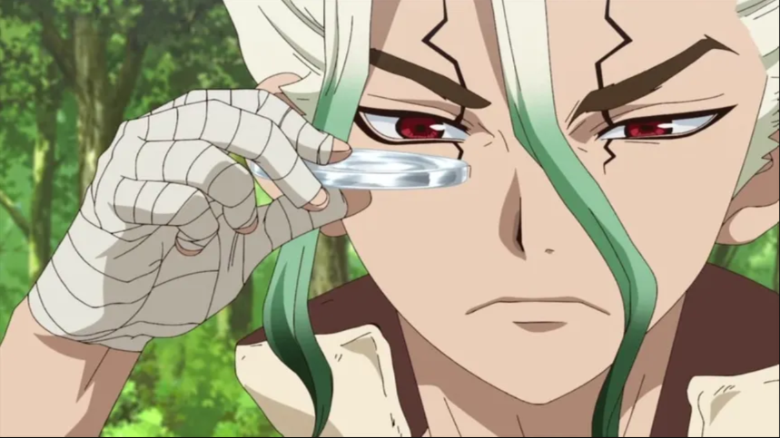

About | Senku
Senku Ishigami is the main character in Dr. Stone. He is a super-smart teenager who loves science and dreams of rebuilding civilization after humanity turns to stone. Senku uses his scientific knowledge to create inventions, medicines, and technology to help people. He is brave, determined, and believes that science can solve almost any problem.

Senku making lenses from scratch
Senku's Characteristics
- Intelligent
- Determined
- Logical
- Confident
- Resourceful
Senku's Friends
- Ryusui Nanami
- Gen Asagiri
- Taiju Oki
- Kohaku
- Suika
- Yuzuriha Ogawa